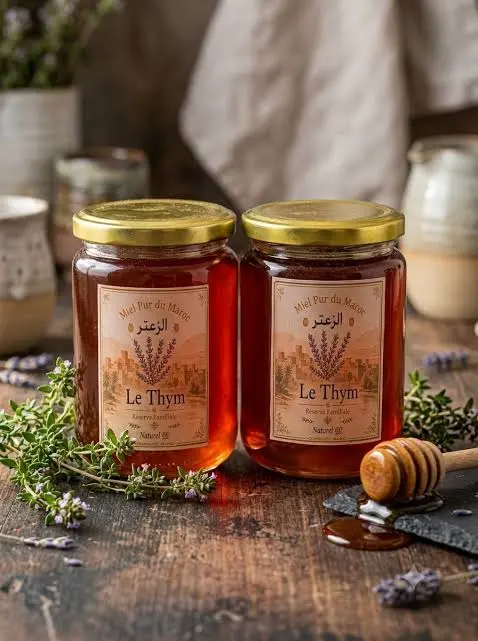
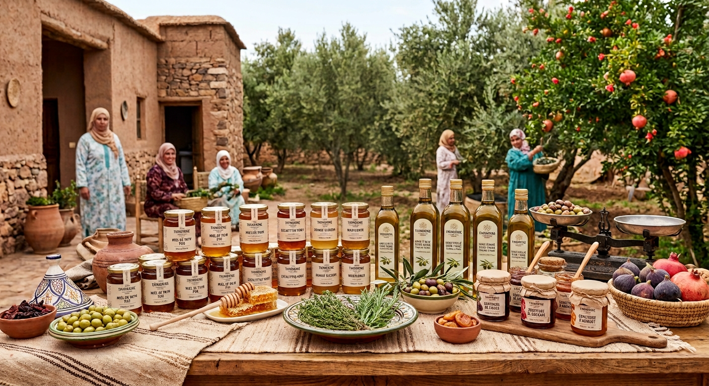
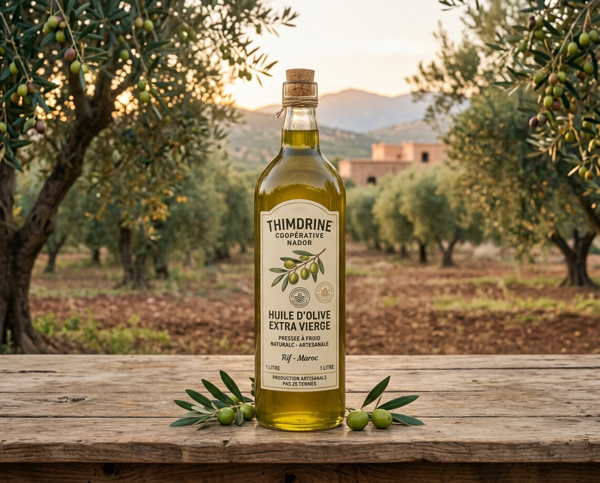
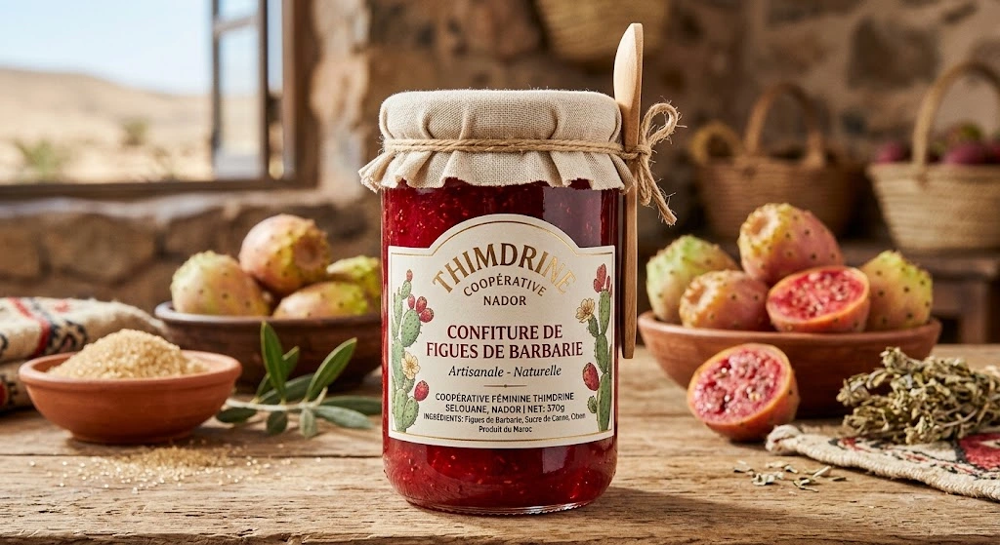

Miel de thym
Miel de thym pur sauvage récolté à la main par les artisanes de la coopérative Thimdrine Nador
180 DH
. pot de 500 g
COOPÉRATIVE DE FEMMES · NADOR
Miel de thym, huile d'olive et confiture de figue de barbarie : des produits du terroir 100% naturels et sans additifs, du champ jusqu'à votre table.

Née au cœur des montagnes du Rif à Nador, la coopérative Thimdrine réunit 25 femmes artisanes unies par la passion du geste et la transmission du savoir-faire ancestral. Ensemble, nous redonnons vie à notre patrimoine local à travers la récolte et la transformation artisanale de produits d'exception : du miel de thym pur, de l'huile d'olive extra-vierge pressée à froid et de la confiture de figue de barbarie. Chaque produit que vous dégustez est le fruit d'un travail 100% naturel, sans additifs ni conservateurs, pensé pour préserver la biodiversité du Rif tout en offrant une autonomie durable aux femmes de notre région.
Les trois produits qui ont fait la réputation de Thimdrine sur les marchés de Nador.

Miel de thym pur sauvage récolté à la main par les artisanes de la coopérative Thimdrine Nador

Huile d'olive extra-vierge du Rif pressée à froid de manière artisanale par la coopérative Thimdrine

Préparée artisanalement avec des figues de barbarie récoltées à maturité dans la région du Rif, sans additifs ni colorants.